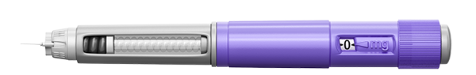
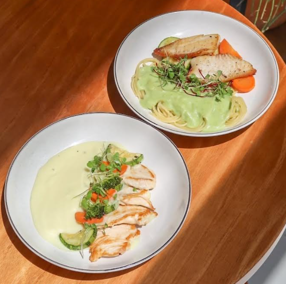
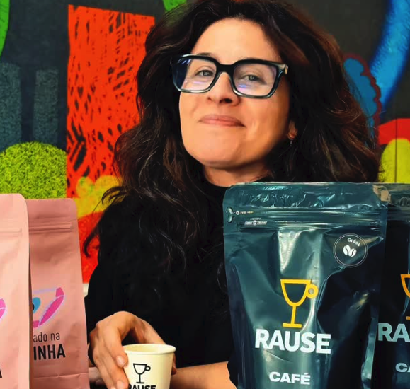
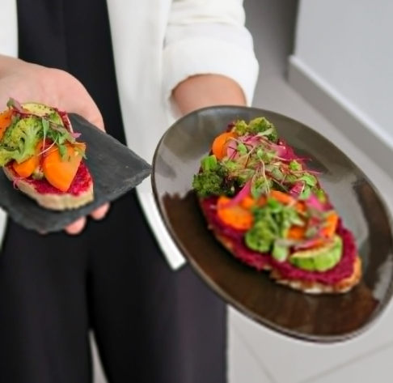
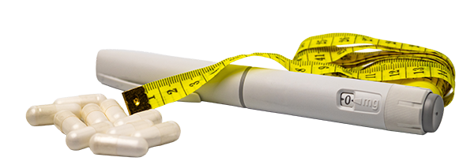

Por: Vânia Nocchi
CANETAS
emagrecedoras
mudam o prato
Como bares e restaurantes estão adaptando cardápio, estoque e precificação ao novo perfil do cliente

Mais sobras no prato, porções menores e aumento da procura por opções leves, como saladas. No Rause Café & Vinho, de Curitiba (PR), o novo comportamento chamou a atenção da proprietária Nina Ribas para uma mudança no padrão de consumo dos clientes. E esse não é um caso isolado.
Segundo levantamento da Associação Brasileira de Bares e Restaurantes (Abrasel), 64% dos estabelecimentos entrevistados já notaram aumento da procura por porções reduzidas e do compartilhamento de pratos.
Esse movimento vem sendo chamado informalmente de “Menu Mounjaro”, tendência que acompanha a popularização dos medicamentos à base de GLP-1, conhecidos como canetas emagrecedoras.

QUAIS SÃO OS EFEITOS DAS CANETAS EMAGRECEDORAS?
Os medicamentos à base de GLP-1 reduzem o apetite e diminuem a quantidade de comida consumida ao longo do dia. Eles aumentam a sensação de saciedade e retardam o esvaziamento do estômago. Desenvolvidos para tratar obesidade e diabetes tipo 2, nos últimos anos seu uso se expandiu com foco no emagrecimento.
Essa mudança no apetite também altera a preferência alimentar. Alimentos gordurosos, açucarados ou muito pesados perdem espaço. Cresce a busca por opções mais leves e com mais proteínas.
Com o uso ultrapassando as indicações médicas originais, os alertas se intensificam. A aplicação deve ser orientada por profissionais de saúde, com indicação adequada para cada caso. Autoridades de saúde também alertam para a circulação de versões falsificadas no mercado, o que exige cuidado na aquisição.
SINAIS DE MUDANÇA NOS PEDIDOS
O Rause é uma cafeteria e bistrô no Batel, bairro de Curitiba com alta concentração de empresas. O almoço corporativo responde pelo maior volume de vendas da casa, e foi esse público que tornou a mudança mais visível. Nina chegou a ouvir de clientes que, em alguns escritórios próximos, metade dos colegas estava usando as canetas.
No final de 2025, a mudança no consumo começou a ficar mais evidente, segundo a proprietária: “Sentimos uma queda nas vendas e, muitas vezes, os pratos voltavam com muitas sobras. Outra percepção foi o aumento de pedido da opção do prato kids”, conta Nina Ribas. Ela explica que os primeiros sinais vieram acompanhados de relatos dos próprios clientes: "O apetite tinha sumido".
Atualmente, cerca de 30% dos clientes da casa fazem uso das canetas, de acordo com a empresária, e o padrão de pedidos começou a mudar, com aumento do consumo de alimentos mais leves e funcionais, além de porções reduzidas. "Esse perfil de cliente procura por pratos com a porção maior de proteína, valoriza o desconto e come muito menos", avalia.
Empresária identifica que cerca de 30% dos seus clientes valorizam maior porção de proteínas e pratos menores.

IMPACTOS NA OPERAÇÃO
O novo cenário pode impactar diretamente a operação dos restaurantes, que passam a lidar com clientes consumindo menos e com o desafio de equilibrar custos e manter a rentabilidade. Na prática, isso exige revisão de processos que vão do planejamento de compras à montagem dos pratos. O controle de estoque se torna mais estratégico, enquanto porções e preços passam a ser reavaliados diante de um consumo menos previsível.
No Rause, o impacto chegou também ao estoque de bebidas: a queda no consumo de refrigerante zero surpreendeu. Os clientes não migraram para versões sem açúcar, simplesmente passaram a consumir menos. O efeito se repetiu nos eventos corporativos organizados pela casa, nos quais a queda no consumo de alimentos seguiu o mesmo padrão do salão.
A resposta foi um menu funcional, com foco em refeições mais leves, equilibradas e proteicas. Em janeiro de 2026, Nina reuniu a equipe, colheu relatos de clientes que usavam as canetas e consultou nutricionistas antes de reformular o cardápio. “Diminuímos nossos pratos mais vendidos, ajustamos o valor, equilibramos as quantidades de carboidratos, proteínas e legumes conforme orientação de médicos e nutricionistas e aproveitamos para introduzir opções de cafés proteicos, sucos termogênicos e mais saladas”, conta a empresária. Segundo ela, foi necessário também revisar pedidos e compras de insumos para adequar o abastecimento ao novo padrão de consumo.


Adaptação na prática
Principais mudanças adotadas
pelo Rause Café & Vinho
- Pesquisa local e escuta atenta às demandas dos clientes usuários das canetas e consulta a nutricionistas antes de tomar decisões
- Redução das porções dos pratos mais vendidos para adequação ao novo padrão de consumo
- Reformulação do cardápio com maior ênfase em proteínas e combinações mais leves
- Criação de uma linha funcional com novos produtos, como cafés proteicos, sucos termogênicos e saladas
- Revisão de preços para equilibrar a viabilidade do negócio com a expectativa do cliente de pagar menos por porções menores